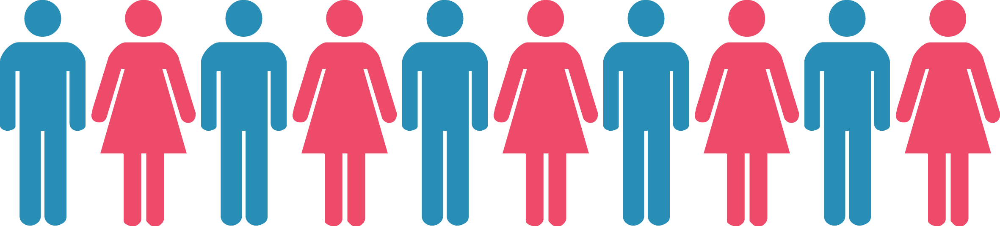

Tech's gender dilemma
Where are the women?
(click the headline to find them)
What's the problem?
While women make up 30% of all workers in the tech industry,
a closer look at the percentage of women in technological and leadership roles shows that few
women are in position to influence their companies' product development or strategic direction.
15.6%
of technological jobs belong to women. (data from Google, Apple, Facebook, Microsoft, Cisco and Twitter)
22.5%
of leadership jobs belong to women. (data from Google, Apple, Facebook, Microsoft, Twitter and Amazon)
What's the problem? (cont.)
Women, who now make up the majority of people graduating from college,
have made gains in other highly-skilled occupations, but still lag behind in tech.
56%business and finance
36%physicians and surgeons
33%lawyers
20%software developers
Overall, women make up 59% of the U.S. labor force and almost 51% of the population.
What are potential causes?
The problem begins early as experts say girls lose interest in the STEM
(science, technology, engineering, math) fields during middle school. By eighth grade,
half as many girls as boys are interested in STEM careers. These attitudes continue into college,
where the percentage of computer science graduates who are women has been in decline.
Click the quote mark to read a testimonial.
What are potential causes? (cont.)
Once women do earn their computer science degrees,
they often find it difficult to break into the field and stay there. Eliza Brock,
a developer who teaches at Nashville Software School and runs her own software company,
attributes part of the problem to the recent emphasis on 'culture fit' in hiring.
While the bias is often unconscious, the phrasing can become a barrier of entry to women and
minorities when employers hire those they could most easily picture hanging out with in the breakroom.
Gender disparity in leadership positions could be a result of
women's shaky self-confidence, according to Vivek Wadhwa, a Silicon Valley investor,
diversity coach and author of Innovating Women. For example, Google's own data showed
women were promoted less often than men because workers need to nominate themselves. Women
who did so got pushback as they were rewarded for modesty and penalized for what men viewed
as aggressive behavior. However, once Google began including female leaders at workshops to
coach everyone on how to promote themselves effectively, the gender difference among nominees disappeared.
What are potential causes? (cont.)
The culture of tech could be a reason why 56% of women in the field wind up leaving their jobs,
which is double the rate of men. Fifty-one percent of those women take on a different role in the tech industry,
while 49% go on to do something different. Why is it so difficult for many women to remain in their tech positions?
Click the quote marks to read some testimonials.

What are potential causes? (cont.)
Accessing venture capital funding is another challenge for women in the tech industry.
Many attribute the difficulty women face to sexism that persists throughout the field where 96% of venture
capital firm partners are male. The threat of harassment is an obstacle for women seeking venture capital and
many female entrepreneurs avoid meeting VCs in spaces such bars and hotel lobbies, where men frequently meet one another
to discuss potential deals. According to Wadhwa, many venture capitalists have an idea
of what a successful startup founder looks like and women just don't fit.
Click the quote marks to read testimonials about venture capital.
Why should we care?
It may seem like gender disparity in the tech industry is only an issue for
the women who are directly involved, but it turns out the effects have larger implications for society.
“If we [prioritize recruiting women], there’s no question we’ll more than double the rate of technology output
in the world,” said Larry Page, Google's CEO, in 2013.
Raising salaries could be one way to recruit more women. According to Joint Venture Silicon Valley, in 2013,
men with bachelor's degrees in Silicon Valley earned 61% more than women with the same level
of education. This is compared to 48% in the United States overall.
The National Center for Women and Information Technology estimates that by 2022, there will be about 1.2 million
computing jobs available. Right now, universities in the United States are producing only 39% of
the graduates needed to fill them. If women continue to leave the field, the shortage of workers will grow worse.


Why should we care? (cont.)
Beyond the economic implications, diversity in a tech staff also leads to a greater
range of products that serve everybody. For example, when Apple launched its health tracker in early 2015, it
omitted women's menstrual cycles, relied upon by couples trying to conceive, from the service. And as recently
as 2011, Apple's Siri could find prostitutes and Viagara, but not abortion providers.
Diversity also improves individual and business performance. One 2006 study showed that groups with more racial
diversity outperformed groups with no racial diversity because being with similar people leads us to believe we
all share the same perspective. The study also found that when we hear dissent from someone who is different than us,
it provokes more thought than when it comes from someone who looks like us. In business, a 2014 study showed that
gender-balanced organizations perform better financially and demonstrate superior team dynamics and productivity.
A 2014 report by the Kauffman Foundation found that female-run startups produce a 31% higher
return than startups run by men.
What's next?
Many leading tech companies are working to eradicate the gender disparity in their organizations,
though progress is slow.
In 2013, Google, whose engineers are 17% female, introduced a training program designed to fight cultural biases.
Employees play word games and are surprised to find they quickly link engineering professions with men and less
technical jobs with women.
Pinterest, whose technical team is 21% female, has a recruiter whose focus is diversity and an engineering promotion
committee designed to ensure no one is overlooked.
Facebook, where women comprise only 15% of the technical workforce, gathers its female employees together for a
leaderhip day and offers generous maternity and paternity leave packages.
“We are in a major time of shift. There is no other time when women have been better educated, earning a majority
of undergraduate and graduate degrees and serving in equal numbers in nearly all professions. The control of personal
wealth is about equal, as baby boomer men are dying earlier and women are inheriting money from their parents and
husbands and have their own assets from working. If we can access 2 percent of that money controlled by women, we
don’t need to be begging on Sand Hill Road.”
— Trish Costello, entrepreneur and founder of Portfolia, a venture capital investment platform designed for women